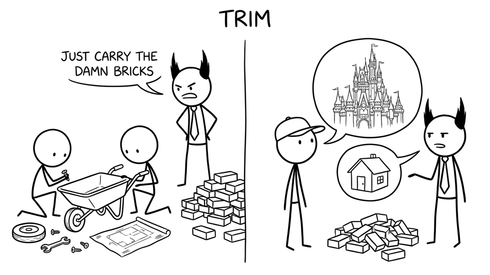

<section id="trim" data-transition="fade" style="display:flex; align-items:center; justify-content:center; padding:0; background:#fcfcfa">

<p style="position:absolute;left:0;bottom:10px;width:1920px;margin:0;text-align:center;font-family:'Patrick Hand', 'Trebuchet MS', sans-serif;font-size:22px;color:#8a8f98">Copyright Dobromir Montauk 2026</p>
<aside><b>Trim.</b> Two kinds of scope to cut. Product scope: what the customer asked for vs. what they actually need this quarter. Approach scope: the framework, the platform or the automation we would love to build first. Building tools is capacity, not winning, so do it on purpose, not by accident.<br><br>Examples:<br>1. Product scope. The customer asked for a full analytics dashboard: filters, charts, scheduled emails. The question "what decision is this for?" turned up one weekly number for the CFO. A nightly CSV export shipped in two days.<br>2. Product scope. The spec said "supports every payment type". The data said 97% of transactions were cards. Launch with cards, a month early; add the next type when a real customer asks.<br>3. Product scope. The plan included a full admin UI for config, roles and audit logs. The only users were three internal engineers. A documented script and a config file in the repo did the job and saved six weeks.<br>4. Approach scope. A request for one flag on one machine turned into a design for tiered config with merge rules and a new admin UI. Someone asked, "any objection to the hackiest possible approach?" A one-off override solved it that day.<br>5. Approach scope. An engineer wanted a generic plugin system first, so integrations would be "easy forever". There was one integration on the roadmap. Hard-code it; build the abstraction from three real examples later, not zero.<br>6. Approach scope. Support wanted an edge case automated before launch. How often does it happen? About once a week. Keep it manual for now, and launch.<br>7. The other side. A simple database index was suggested early and passed over because the tests weren't representative. Seven weeks later, under production load, the same index took the query from 4.5 s to 0.7 s.<br><br>Caveat: a trimmed feature still has to be usable. Phase 1 can be manual, but call it a partial feature, not GA. "Done" means what the customer expects.</aside>
</section>
